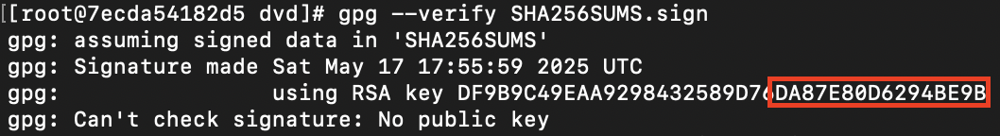
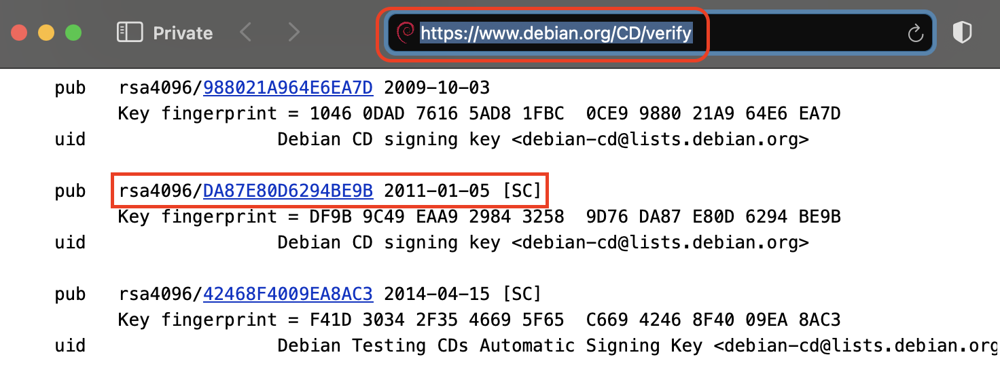
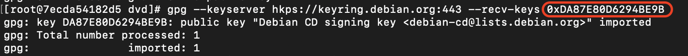
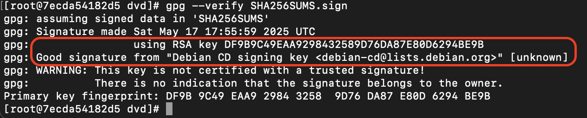
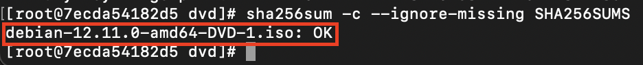

My MacDventure Part 2: Burning ISOs on a Mac
Burning ISOs On A Mac
Intro
So there I was again trying to feel at home on the Mac.
The biggest challenge with migrating from Linux to Mac is the lack of tools and ways to do things that are taken for granted on a Linux system.
For example the popular gpg command line tool is not present on the Mac.
So, your typical workflows, such as downloading and validating an ISO, are very likely to be derailed.
Thankfully containerization may help alleviate some of those challenges.
This installment of my Macdventure is intended to provide another map sheet for navigating around the Mac hurdles.
Due to lack of native GPG tooling on the Mac our workaround will be to use the official Rocky 9 container, mount our downloads inside and validate them from there.
Let’s get to it.
Download the ISO and Signatures
-
Let’s start by creating a diretory where ISO and checksum-related files will be donwloaded
mkdir -p ~/iso_test/debian -
Download Debian ISO checksums, checksum signatures, and the ISO itself.
curl -O --output-dir ~/iso_test/debian https://cdimage.debian.org/debian-cd/current/amd64/iso-dvd/SHA256SUMS curl -O --output-dir ~/iso_test/debian https://cdimage.debian.org/debian-cd/current/amd64/iso-dvd/SHA256SUMS.sign curl -L -O --output-dir ~/iso_test/debian https://cdimage.debian.org/debian-cd/current/amd64/iso-dvd/debian-12.11.0-amd64-DVD-1.isoNote
-Loption to follow redirects to the ISO. It is needed due to high chance of being redirected to the closes mirror
Getting Around the Lack of GPG Utility
Due to lack of native GPG tooling on the Mac our workaround will be to use the official Rocky 9 container, mount our downloads inside and validate them from there.
-
Start rockylinux container and mount the directory cotnaing downloaded files
podman run --rm -ti --name debian --user 65534:65534 -v $HOME/iso_test/debian:/dvd docker.io/library/rockylinux:9.3 -
Once inside the container change into the directory with downloaded files.
cd /dvd -
Check the GPG key ID with which the checksum file was sigend. The key ID will be the last 16 characters of the finterprint.
gpg --verify SHA256SUMS.sign
-
Verify that the key is one of the official debian keys posted here.

-
Download the correct GPG key.
gpg --keyserver hkps://keyring.debian.org:443 --recv-keys 0xDA87E80D6294BE9B
-
Validate signatures. Note the
using RSA keyandGood signature frommessages.gpg --verify SHA256SUMS.sign
-
Validate the ISO.
sha256sum -c --ignore-missing SHA256SUMS
Burn the ISO
-
Insert the USB stick into the, when the window pops up click Ignore
-
Check disk device and make sure it’s not mounted. In my case the results of the command below, listed the USB stick on which the ISO will be burned as
disk4.diskutil list mount | grep <identifier> -
Finally burn the ISO. Be very careful with specifying the output
of=device!!! There is a reason whyddis nicknamed “data destroyer.”sudo dd if=/Users/<username>/iso_test/debian/debian-12.11.0-amd64-DVD-1.iso of=/dev/disk4 bs=4M status=progress